非线性转换
我们之前学习的感知机（Perceptron）、线性回归以及支持向量机（SVM）都属于线性模型。它们的核心是在数据空间中寻找一个线性的决策边界（一条直线或一个超平面）来进行分类或回归。
线性模型的局限性
线性模型有一个根本性的前提：数据必须是线性可分的（或者至少是近似线性可分的）。
然而，在现实世界的很多任务中，数据是复杂的非线性结构。例如下图中的左子图，数据存在噪声，不是完全线性可分，而右子图的“同心圆”数据分布模式本身就是非线性结构。
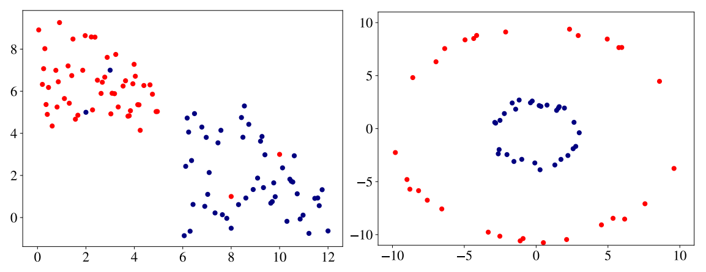The Hundred-Page Machine Learning Book
- 对于“同心圆”数据，蓝色的点（一类）被红色的点（另一类）包围在中间。
- 在这种情况下，你无法画出任何一条直线来将这两类数据完美地分开。
这就暴露了线性模型的局限性。无论我们用感知机、线性回归还是标准的线性SVM，都无法解决这个问题。
既然在当前的维度（例如d维）下我们找不到一个线性的解，那么我们是否可以换一个“视角”来看待数据？ 这里的核心思想是：将数据从原始的低维空间Rd映射到一个更高维的空间Rp（其中p>d），并期望数据在这个高维空间中变得线性可分。 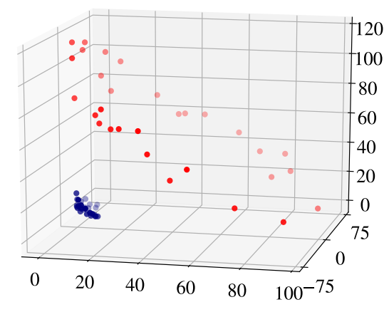The Hundred-Page Machine Learning Book
例如，在二维平面上（d=2）的同心圆数据。我们引入一个非线性变换Φ，将其映射到三维空间（p=3）。这个变换Φ可能是： Φ(x)=Φ((x1x2))=⎝⎛x1x2x12+x22⎠⎞=z - 效果：原始数据中的点x被转换为了新的点z。如果原点在同心圆的中心位置，那么：
- 内圈的红点（x12+x22较小）会被映射到三维空间中一个“碗”的底部。
- 外圈的绿点（x12+x22较大）会被映射到这个“碗”的边缘，处于较高的位置。
- 结果：在这个新的三维Z空间中，我们现在可以轻易地用一个水平的平面（这是一个线性模型！）将这两类数据分开。
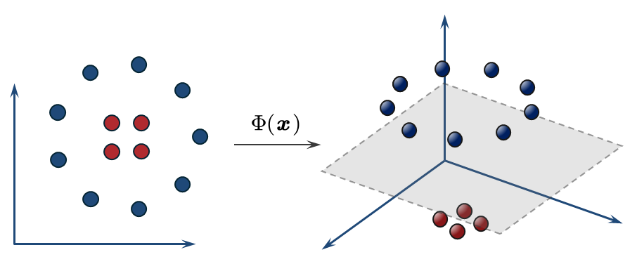
非线性映射函数
这个“先转换，再应用线性模型”的流程，核心在于非线性映射函数Φ，构建了一个广义线性模型 (Generalized Linear Model)。 x=⎣⎡x1x2⋮xd⎦⎤⟹ΦΦ(x)=⎣⎡Φ(1)(x)Φ(2)(x)⋮Φ(p)(x)⎦⎤=⎣⎡Φ(1)(x1,x2,...,xd)Φ(2)(x1,x2,...,xd)⋮Φ(p)(x1,x2,...,xd)⎦⎤ - 数据转换 (Transform)：获取原始的训练数据{(xi,yi)}，其中xi∈Rd。
- 应用一个非线性映射函数Φ，将每个xi转换为一个新的特征向量zi=Φ(xi)。这个新的向量zi位于高维的特征空间Z（即Rp）。
- 训练 (Train)：我们现在有了一个全新的、高维的训练数据集{(zi,yi)}。我们假设这个新数据集在Z空间中是线性可分的。
- 然后，我们就可以在这个高维Z空间中训练一个标准的线性模型（如感知机、逻辑回归或SVM），找到一个权重向量θ（注意，θ是p维的，大于升维前的d维）。
fθ∈Rd(x)=θ⊤x⟹fθ∈Rp(x)=θ⊤Φ(x) - 决策边界：
- 在高维Z∈Rp空间中，决策边界是线性的：θ⊤z=0。
- 对应回原始Rd空间，决策边界就变成了：θ⊤Φ(x)=0。由于Φ是非线性的，这个边界在原始空间中是非线性的。
通过这种方式，我们能够地使用线性模型的方法来解决非线性问题。
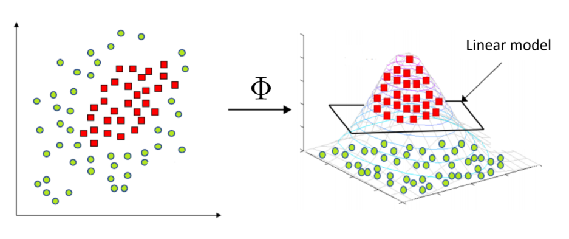
- 计算和选择的困难 (Computational Cost / Model Selection)：
- 我们该如何选择一个“好”的映射函数Φ呢？我们无从知晓哪种映射能恰好使数据变得线性可分。
- 为了确保数据可分，我们可能需要将维度p设置得非常非常高，甚至可能是无限维。
- 当p变得巨大时，显式地计算和存储所有新的特征向量zi=Φ(xi)在计算上是极其昂贵甚至是不可能的。
- 过拟合的风险 (Overfitting)：
- 我们回顾一下VC维。线性模型在p维空间中的VC维dVC大约是p+1。
- 如果为了使数据可分，我们把p提得非常高（例如，p超过了数据点的数量N），模型fθ(x)=θ⊤Φ(x)的VC维就会变得过高。
- 一个过于复杂（高VC维）的模型会具有极强的“记忆”能力，它可以在训练集上轻松达到Ein≈0（例如，感知机在p>N时总能找到解），但这很可能是过拟合。模型只是“背住”了训练数据，而没有学到潜在的规律，导致其泛化能力（Eout）会非常差。
这些棘手的问题，将可以通过一种称为核技巧 (Kernel) 的方法来解决。
核方法 (Kernel Method)
核假设
首先，我们需要区分一下θ（权重向量）和x（数据点）： - θ=(θ1,θ2,…,θd)⊤是我们模型的参数，它定义了决策边界（超平面）的法向量。
- x=(x1,x2,…,xd)⊤是我们模型的输入，它是一个数据点的特征。
虽然它们概念不同，但它们在数学上都位于同一个向量空间Rd中（即维度是相同的）。 权重向量的分解
接下来，让我们把任意一个可能的解θ分解成两个部分： - θ∥ (平行分量)：位于由所有训练数据{xj}j=1n所张成 (span) 的那个子空间中。根据张成的定义，这个分量一定可以被写成下面这样的形式：
θ∥=j=1∑nαjxj 由于训练数据张成的子空间（我们称之为S）不一定就是整个Rd空间（它可能比Rd小），根据线性代数的知识，总会存在一个与S唯一对应的“正交补空间”S⊥。 - θ⊥ (正交分量)：θ⊥就是位于这个正交补空间S⊥中的分量，它天生就与S中的所有向量（包括所有xj）正交，即与数据张成的子空间完全正交。这意味着θ⊥与每一个训练数据点xj都垂直，即(θ⊥)⊤xj=0对所有j都成立。
(θ⊥)⊤xj=0
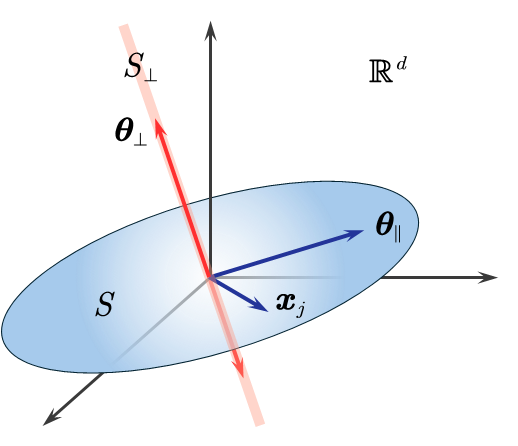
现在，我们来看θ⊥这个分量对我们的模型和优化目标有什么影响。 - 对“模型的预测/损失项”的影响：
模型对数据点xi的预测、损失函数、约束条件依赖于θ⊤xi。我们把分解后的θ代入： θ⊤xi=(θ∥+θ⊥)⊤xi=θ∥⊤xi+θ⊥⊤xi 因为θ⊥与所有xi都正交，所以θ⊥⊤xi=0。 θ⊤xi=θ∥⊤xi+0=θ∥⊤xi 结论1：正交分量θ⊥对模型的预测，损失函数、约束条件没有影响！模型的拟合好坏只取决于θ∥。 - 对“正则化项”的影响：
我们要最小化∥θ∥2。 ∥θ∥2=∥θ∥+θ⊥∥2 由于θ∥和θ⊥相互正交，根据勾股定理： ∥θ∥2=∥θ∥∥2+∥θ⊥∥2 结论2：正交分量θ⊥只会让∥θ∥2变大（或者在θ⊥=0时保持不变）。 - 综合起来：
我们想找到一个最优的θ^来最小化∥θ∥2，同时满足约束条件。 - θ⊥分量对满足约束条件毫无帮助（结论1）。
- θ⊥分量只会增大我们要最小化的目标∥θ∥2（结论2）。
因此，一个“好”的优化器（例如SVM）或者带了ℓ2正则化项的模型，为了让∥θ∥2尽可能小，必然会选择θ⊥=0。这就意味着，我们寻找的最优解θ^必定只包含θ∥部分，即： θ^=θ^∥+0=j=1∑nαjxj
这揭示了一个深刻的数学事实：对于这类带ℓ2正则化的线性模型，其最优解θ^必定存在于由训练数据xj的张成的子空间中。 最优解的表示定理
这在数学上被称为表示定理 (Representer Theorem)。该定理证明了，对于一大类学习问题，如果其优化目标形式为：
θmini=1∑nL(θ⊤xi,yi)+Ω(∥θ∥2) 即任意损失函数 + 一个关于θ的ℓ2正则化项，那么它的最优解θ^必定可以被写成训练数据xj的线性组合： θ^=j=1∑nαjxj 其中θ和xj都是d维向量，而αj是一个标量系数。 观察一下这个形式，我们熟悉的岭回归（带ℓ2的最小二乘法）、支持向量机 (SVM)、带ℓ2的逻辑回归等，几乎所有我们常用的经典模型都适用这个定理（因为它们都使用了ℓ2正则化来防止过拟合）。 因此，我们可以合理地在核方法中引入这个定理，作为一个基本假设，从而利用这个θ^的展开式来解决计算问题。 核技巧
现在我们来看看这个假设如何帮助我们解决计算问题。在线性模型中，无论是训练（如感知机更新）还是预测（如sign(θ⊤x)），我们最核心的计算就是θ⊤x。 权重参数的等效表示
在预测阶段：线性模型的预测公式是f(x)=θ⊤x。将假设θ=∑j=1nαjxj代入： θ⊤x=(j=1∑nαjxj)⊤x=j=1∑nαj(xj⊤x) 我们只需要计算训练样本与新样本x之间的内积xj⊤x。 在训练阶段：由于我们要找的参数θ^=∑j=1nαjxj，因此训练的目标是找到最优的α=(α1,…,αn)⊤。我们通过最小化一个基于训练集的“损失函数+正则化项”来找到它。以岭回归为例： θmini=1∑n(θ⊤xi−yi)2+λ∥θ∥2 将假设θ=∑j=1nαjxj代入： - 代入“损失项”θ⊤xi：
θ⊤xi=(j=1∑nαjxj)⊤xi=j=1∑nαj(xj⊤xi) - 代入“正则化项”∥θ∥2：
∥θ∥2=θ⊤θ=(i=1∑nαixi)⊤(j=1∑nαjxj)=i=1∑nj=1∑nαiαj(xi⊤xj)
我们只需要计算训练样本之间的内积xj⊤xi。 我们发现，无论是训练算法还是最终的预测，我们不再需要显式地知道θ是什么了，只需要计算数据点之间的内积 (inner products)。 也就是说，许多线性学习方法（如SVM）都可以被改写为完全依赖于数据点之间内积运算的算法。
推广到非线性变换
现在，我们把刚刚的逻辑，原封不动地应用到我们“想象中”的那个高维特征空间Z中。 我们有非线性映射Φ，将低维数据点x∈Rd映射为高维数据点z=Φ(x)∈Rp。 在高维空间Rp中，根据前面的推导，线性模型的核心计算变成了数据点之间的内积： Φ(x)⊤Φ(x′) 这里x和x′是两个来自原始空间的样本。 正如之前所说，我们不想（也不能）先计算出高维的Φ(x)和Φ(x′)，然后再求它们的内积。这个计算量太大了。 - 我们希望找到一个“捷径”函数，称之为κ (kappa)。
- 这个函数κ接受两个低维的输入x和x′。
- 它返回的结果，恰好就等于这两个向量被映射到高维空间后的内积。
- 这个κ就被称为核函数 (Kernel Function)。
定义：一个函数κ:Rd×Rd→R，如果它对应着某个非线性变换Φ，使得对于所有的x,x′都满足： κ(x,x′)=Φ(x)⊤Φ(x′) 核技巧的例子
接下来，我们通过一个非常具体且直观的例子，展示“核技巧”是如何运作的。
- 原始空间 (Input Space)：我们处理的数据在Rd空间，这里d=2。
- 一个数据点x表示为：x=(x1x2)。
- 特征空间 (Feature Space)：我们希望将数据x映射到一个更高维的Rp空间，使得数据在该空间中线性可分。
- 例如，一个非线性映射Φ将2维数据x转换为了一个6维 (p=6) 的向量Φ(x)：
Φ(x)=⎝⎛1x12x222x12x22x1x2⎠⎞ - 这个新的Φ(x)包含了原始特征的常数项、平方项、一次项和交叉项，它能捕捉更复杂的模式。
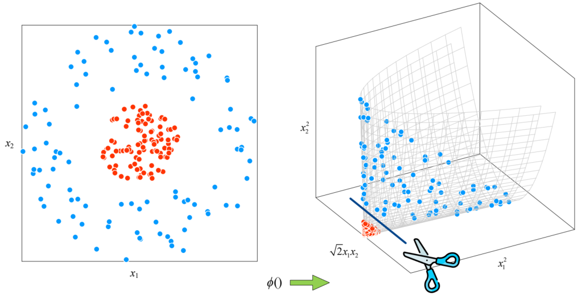
如果我们不知道核技巧，我们就必须老老实实地按照非线性变换的思路来做：
- 计算Φ(x)和Φ(x′)：
- 取两个2维数据点x=(x1x2)和x′=(x1′x2′)。
- 分别将它们映射到6维空间：
Φ(x)=⎝⎛1x12x222x12x22x1x2⎠⎞,Φ(x′)=⎝⎛1(x1′)2(x2′)22x1′2x2′2x1′x2′⎠⎞
- 计算高维内积Φ(x)⊤Φ(x′)：这是两个6维向量的点积，我们需要将对应分量相乘再相加：
Φ(x)⊤Φ(x′)==(1⋅1)+(x12⋅(x1′)2)+(x22⋅(x2′)2)+(2x1⋅2x1′)+(2x2⋅2x2′)+(2x1x2⋅2x1′x2′)1+x12(x1′)2+x22(x2′)2+2x1x1′+2x2x2′+2x1x2x1′x2′ 问题：这个计算过程非常繁琐。在这个例子中p=6还勉强可以计算，如果p是100万维，这个计算在现实中是不可行的。
方法二：核技巧 (The Kernel Trick)
核技巧说：我们别这么麻烦了，我们定义一个核函数κ(x,x′)，它在低维空间d中进行计算，但其结果等价于高维空间p中的内积。 核函数：在这个例子中，我们使用一个二次多项式核函数 (Polynomial Kernel)：
κ(x,x′)=(1+x⊤x′)2 - 在低维 (d=2) 空间计算内积：
x⊤x′=(x1x2)⊤(x1′x2′)=x1x1′+x2x2′ - 代入核函数：
κ(x,x′)=(1+(x1x1′+x2x2′))2 - 展开这个平方项：使用(a+b+c)2=a2+b2+c2+2ab+2ac+2bc，令a=1,b=x1x1′,c=x2x2′，直接代入得：
κ(x,x′)==(1)2+(x1x1′)2+(x2x2′)2+2(1)(x1x1′)+2(1)(x2x2′)+2(x1x1′)(x2x2′)1+x12(x1′)2+x22(x2′)2+2x1x1′+2x2x2′+2x1x2x1′x2′
可以发现，这两种方法的结果完全一样，但是计算的维度却不同。
我们想要高维空间R6中的内积结果，我们实际做的是在低维空间R2中算一次内积（x1x1′+x2x2′），加1，然后取个平方。所有的计算都停留在d=2维空间中，我们根本不需要去显式地构造那个6维的Φ(x)向量。 这就是核技巧的精髓：它允许我们在低维空间操作，却能获得“等价于”在高维空间进行线性划分的效果，从而高效地解决了非线性问题。
核技巧的流程
不过，要注意的是，在实际应用中，核技巧的流程是完全相反的：
- 我们遇到一个非线性问题。
- 如果我们把数据映射到Rp（p很大），比如增加x12,x22,x1x2这样的特征，数据可能就变得线性可分了。（例如，Φ(x)就是那个6维向量）。
- 现在有两个问题：
- 什么样的Φ(x)可以把数据变得线性可分？
- Φ(x)的内积Φ(x)⊤Φ(x′)计算量太大了，要怎么解决？
- 核技巧的做法是：
- 我们直接从“核函数工具箱”中选择一个核函数κ。我们相信，这个核函数有足够多的特征组合，对应着某个我们不知道的高维空间Φ，能把数据变得线性可分。同时，通过系统性地尝试，我们也一定能找到最适合这个非线性问题的核函数。
- 并且核函数的自身特点允许我们不去构造那个包含所有新特征的、维度极高的Φ(x)向量，而是通过一个在Rd上的简单计算κ，来直接得到那个高维空间中的内积结果。这就解决了计算量的问题。
- 我们把这个κ代入我们的算法（如SVM）中，就可以作为一个线性可分的问题求解了。
核函数
这里我们介绍两种最著名和最强大的核函数：多项式核（Polynomial Kernel）和高斯/RBF核（Gaussian / RBF Kernel），并给出了如何判断一个函数是否能作为核函数的理论依据——Mercer定理。
线性核函数
这是最简单的一种核函数，它实际上代表了“不进行非线性映射”的基准情况。
κ(x,x′)=x⊤x′ 对应的Φ：它对应的特征映射Φ就是恒等映射，即Φ(x)=x。 - 验证：Φ(x)⊤Φ(x′)=(x)⊤(x′)=x⊤x′=κ(x,x′)。
- 维度：原始空间是Rd，特征空间Φ(x)仍然是Rd（即p=d）。
- 作用：当我们选择使用线性核函数时，我们实际上就是在原始数据空间Rd中直接运行线性模型（如SVM）。这等价于根本没有使用核技巧。
我们知道，对于线性模型，模型寻找的决策边界是一个线性的超平面（在二维空间中是一条直线，在三维空间中是一个平面）。
接下来，我们从核方法的角度来看这个问题。根据核方法的假设（表示定理）θ^=∑j=1nαjxj，任何经过了非线性映射Φ最终预测函数f(x)都可以写成： f(x)=θ⊤Φ(x)=(j=1∑nαjΦ(xj))⊤Φ(x)=j=1∑nαjκ(xj,x) 这个公式的几何意义是：最终的预测函数f(x)，是由n个核函数fj(x)=αjκ(xj,x)叠加（superposition）而成的。为了简化，我们暂时忽略了b。 - n是训练样本的数量。
- 每个基函数fj都由一个训练点xj和它对应的权重αj来定义。
决策边界：线性核 (Linear Kernel) 的核函数是κ(xj,x)=xj⊤x。那么，它是由n个线性核函数fj(x)=αj(xj⊤x)叠加而成的。在几何上，就是由n个超平面叠加而成，其决策边界仍然是一个超平面： 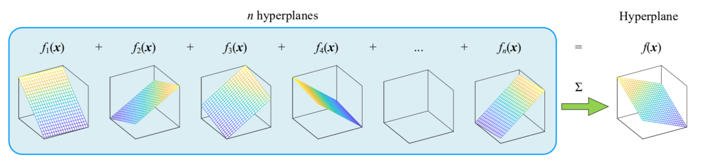
多项式核函数
这是对我们之前看到的那个d=2,p=6例子的一个直接推广。 κ(x,x′)=(1+x⊤x′)m 为什么能确信这个κ一定能对应某个高维映射Φ呢？我们通过二项式定理（或m次的多项式定理）将其展开： (1+x⊤x′)m=(1+x1x1′+x2x2′+⋯+xdxd′)m 我们会得到原始特征xi的所有阶数组合（例如x12x31），最高阶为m。因此，这个κ对应的特征空间Φ(x)是一个由x的所有最高阶为m的多项式项组成的向量。 这个特征空间Rp的维度p是有限的，但它会随着m和d的增长而（组合式地）快速增长。 一般形式：在实际应用中，我们常用一个更具伸缩性的版本：
κ(x,x′)=(a+bx⊤x′)m 其中a和b是我们可以调节的超参数，它们控制着不同阶数项（例如a控制0阶项）和原始内积x⊤x′的权重。 决策边界：在前面我们知道，预测函数由n个对应的核函数叠加而成。那么采用了多项式核的预测函数，则由n个多项式核函数叠加而成。由于多项式核函数是非线性函数，对应的是超曲面 (hypersurface) 。其决策边界等效于n个超曲面叠加，产生了一个复杂的、弯曲的超曲面： 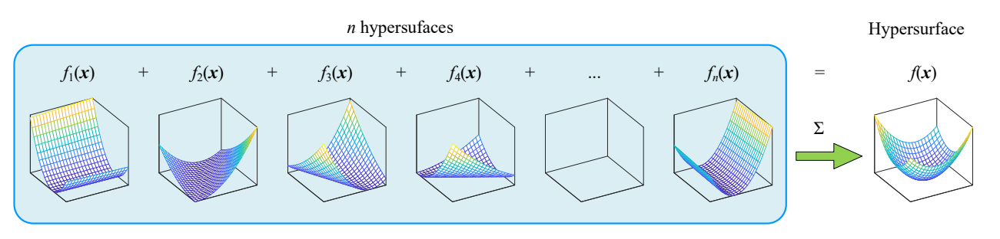
- m=1时（线性核）：κ(x,x′)=(a+bx⊤x′)1
决策边界θ⊤Φ(x)+b=0在原始空间中是一条直线（或超平面）。这是最简单的刚性边界。 - m=2时（二次核）：κ(x,x′)=(a+bx⊤x′)2
这等价于将特征空间Φ扩展到了所有二次项（如x12,x22,x1x2）。映射回原始Rd空间，其决策边界方程是一个二次方程。我们学过，二次方程定义的曲线是圆锥曲线 (Conic Sections)，即圆形、椭圆形、抛物线或双曲线。这使得模型可以用一个“圆”或“椭圆”来分离数据，完美解决了像“同心圆”这样的非线性问题。 - m=3时（三次核）及更高：随着m的增加，我们引入了x13,x12x2等更高阶的项。
决策边界变成了更复杂、更灵活的高阶多项式曲线。如果m=1是一条直线（没有弯曲），m=2是一条可以有“一个弯”的曲线（如抛物线），那么m=3就可以是一条有“两个弯”的曲线（如S形曲线）。m越大，决策边界的灵活性（或“扭曲度”）就越高，它就越能拟合训练数据中复杂的形状。但是m过高会导致决策边界变得极其扭曲，试图“包住”每一个数据点，从而导致过拟合 (Overfitting)。
高斯核/ RBF核
这是迄今为止最常用、最强大的核函数之一，它引入了一个非常深刻的概念。
定义：高斯核（也因其形式被称为径向基函数Radial Basis Function, RBF）定义为：
κ(x,x′)=exp(−2σ2∥x−x′∥22) - 它的值只取决于两个点x和x′之间的欧氏距离（即∥x−x′∥，这是一个“径向”距离）。
- σ (sigma) 是一个超参数，它控制了核函数的“宽度”。
- σ很大时：exp()内的指数项趋近于0，κ总是接近1。模型会变得非常“平滑”，趋近于线性。
- σ很小时：只有当x和x′非常非常接近时，κ的值才不为0。这会产生一个非常复杂、高度非线性的决策边界，容易过拟合。
下图以d=1维的高斯核函数为例（固定x′=0），那么κ(x,x′)=exp(−2σ2∥x∥22)。控制超参数σ从小到大，高斯核函数曲面从红色曲线逐渐变为蓝色曲线。 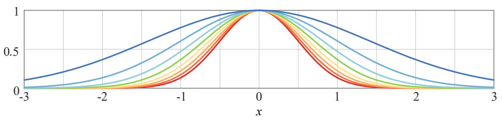
对应的Φ：p=∞ (无限维) 这是高斯核最惊人的特性。它对应的特征空间Φ是一个无限维的空间。我们无法像多项式核那样把它显式地写出来。 决策边界：采用了高斯核的预测函数，其决策边界由n个高斯核函数的超曲面叠加而成，产生了一个复杂的、弯曲的超曲面： 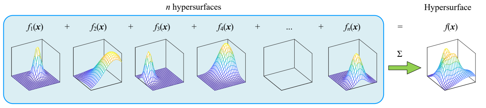
我们可以通过一个d=1维的例子来直观感受一下高斯核函数（为了简化，我们暂时设2σ2=1）： κ(x,x′)=exp(−(x−x′)2)=exp(−x2−(x′)2+2xx′)=exp(−x2)⋅exp(−(x′)2)⋅exp(2xx′) 现在，我们对exp(2xx′)这一项使用泰勒级数展开（ez=∑k=0∞k!zk），得到一个有无穷多个项的多项式： exp(2xx′)=k=0∑∞k!(2xx′)k=k=0∑∞k!2kxk(x′)k κ(x,x′)=exp(−x2)exp(−(x′)2)(k=0∑∞k!2kxk(x′)k) κ(x,x′)=k=0∑∞[(exp(−x2)k!2kxk)⋅(exp(−(x′)2)k!2k(x′)k)] 这是一个标准的内积形式Φ(x)⊤Φ(x′)，其中Φ(x)是一个由无穷多个分量组成的向量，其第k个分量为： ϕk(x)=exp(−x2)k!2kxk(for k=0,1,2,…,∞) 意义：高斯核技巧让我们只用了一个简单的exp()计算，就等价于将数据映射到了一个无限维的特征空间，并在该空间中执行线性分类。 根据Cover定理，数据在越高维的空间中越可能变得线性可分，这符合直觉。因为在无限维空间中，我们几乎总能找到一个超平面将数据完美分开。这使得高斯核具有极强的非线性建模能力，能够处理非常复杂的数据分布。
有效的核函数
我们已经看到了多项式核和高斯核。那么，是不是任何一个接受两个向量输入的函数κ(x,x′)都可以作为核函数使用呢？答案是否定的。 一个函数κ(x,x′)是“有效的” (Valid)，当且仅当它能被写成某个（可能我们不知道的）Φ映射下的内积，即： κ(x,x′)=Φ(x)⊤Φ(x′) 整个核技巧的“魔法”——即在低维计算、在高维生效——完全依赖于这个等式的成立。
那么，我们如何验证对于一个函数κ，存在一个映射Φ，使得κ(x,x′)=Φ(x)⊤Φ(x′)恒成立？ 一个函数κ是一个有效的核函数（即存在对应的Φ），当且仅当：对于任意一组训练数据{x1,…,xn}，由它生成的n×n核矩阵 (Kernel Matrix)K都是半正定的 (positive semidefinite)。 其中，核矩阵K是一个n×n的对称矩阵，其中第i行第j列的元素是： Ki,j=κ(xi,xj) 例如，假设我们有n=3个数据点，分别是x1,x2,x3。那么。3×3的核矩阵K可以写成： K=⎝⎛κ(x1,x1)κ(x2,x1)κ(x3,x1)κ(x1,x2)κ(x2,x2)κ(x3,x2)κ(x1,x3)κ(x2,x3)κ(x3,x3)⎠⎞ 为什么核矩阵K必须是半正定的？我们可以证明Mercer定理的必要性：如果κ是有效核（即κ=Φ⊤Φ′成立），那么K必定是半正定的。 当κ是一个有效核，那么Ki,j=Φ(xi)⊤Φ(xj)。对于任意一个n维向量z=0，我们来考察二次型z⊤Kz： z⊤Kz=i=1∑nj=1∑nziKi,jzj=i=1∑nj=1∑nzi(Φ(xi)⊤Φ(xj))zj=∑i=1n∑j=1nk=1∑p(ziϕk(xi))(zjϕk(xj))=∑k=1p(∑i=1nziϕk(xi))(∑j=1nzjϕk(xj))=∑k=1p(i=1∑nziϕk(xi))2 （注意：p可能是∞）因为这是一个“平方和”，所以它必然≥0。根据定义，如果z⊤Kz≥0对所有z成立，那么K就是半正定的。 但是要证明Mercer定理的充分性，就非常复杂了，需要用到泛函分析 (Functional Analysis) 中的高级数学工具，例如希尔伯特空间 (Hilbert Spaces) 和谱定理 (Spectral Theorem)。
在机器学习课程中，这个方向的证明通常被视为一个“已知事实”。我们只需要记住这个结论：只要一个函数κ能保证它在任何数据集上生成的核矩阵K都是半正定的，我们就可以放心地用它作为核函数。 核应用
- 第一步：选择一个核函数κ。使用已被证明是有效核的“标准库”，如线性核、多项式核、高斯（RBF）核、Sigmoid核等。
- 第二步：改写算法。利用表示定理θ=∑αjxj，将算法的“损失函数”和“决策规则”（预测）全部改写为只依赖α和内积(xi⊤xj)的形式。例如：
f(x)=θ⊤x=(j=1∑nα^jxj)⊤x - 第三步：应用核技巧。在改写后的公式中，直接将所有出现的内积xi⊤xj替换为κ(xi,xj)。
这是因为，使用了非线性映射函数Φ的线性模型f(x)=θ⊤Φ(x)，通过核函数κ(x,x′)=Φ(x)⊤Φ(x′)可以得到： f(x)=θ⊤Φ(x)=(j=1∑nαjΦ(xj))⊤Φ(x)=j=1∑nαjκ(xj,x) 这等同于直接在线性模型f(x)=θ⊤x中，将所有内积xi⊤xj替换为κ(xi,xj)： f(x)=θ⊤x=(j=1∑nα^jxj)⊤x=j=1∑nα^j(xj⊤x)⟹替换为κj=1∑nα^jκ(xj,x) - 第四步：通过交叉验证（Cross-Validation）等方法，比较不同核函数及其超参数（如m或σ）在测试集上的表现。
- 选择那个测试性能最好的核函数作为我们最终的模型。
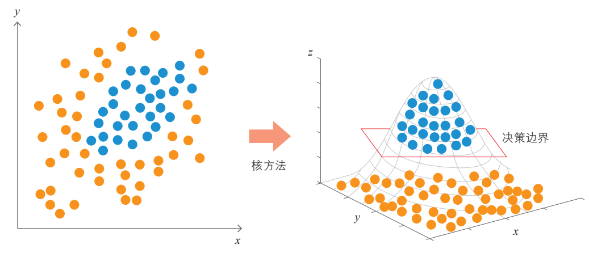图解机器学习算法
在回归中的应用
我们以下面这个我们熟悉的算法为例：带权重衰减的最小二乘法 (Least Squares with Weight Decay)，也常被称为岭回归 (Ridge Regression)。
这是一个线性模型，其目标是找到一个最优的权重向量θ，使得“平方损失”和“ℓ2正则化项”的总和最小。 θ^=argminθ平方损失 (Loss)i=1∑n(θ⊤xi−yi)2+ℓ2-正则化 (Regularization)λ∥θ∥22 - xi∈Rd是d维输入特征。
- θ∈Rd是d维权重（我们要优化的对象）。
- λ是控制正则化强度的超参数。
这个模型是线性的，因为它对xi的预测是θ⊤xi。 我们的目标是将这个线性算法转变为非线性算法，但又不想显式地使用Φ(x)。我们将严格按照“核化三部曲”来执行。 我们不再直接求解d维的θ，而是利用我们之前讨论过的那个关键假设（表示定理）：最优解θ^一定可以表示为n个训练数据的线性组合。 我们用θ=∑j=1nαjxj来替换θ。我们的优化目标从θ∈Rd变成了α∈Rn。 现在，我们将θ=∑j=1nαjxj代入到原始优化问题的两个组成部分中。 重写“平方损失”项：我们先看核心的预测部分θ⊤xi： θ⊤xi=(j=1∑nαjxj)⊤xi=j=1∑nαj(xj⊤xi) 模型的预测现在只依赖于α和训练数据点之间的内积。 重写“正则化”项：我们来看λ∥θ∥22这一项。注意∥θ∥2=θ⊤θ。 ∥θ∥2=θ⊤θ=(i=1∑nαixi)⊤(j=1∑nαjxj)=i=1∑nj=1∑nαiαj(xi⊤xj) 正则化项现在也只依赖于α和训练数据点之间的内积。 组合成新的优化问题 (Dual Problem)：把A和B两部分放回原式，我们得到一个只关于α的新问题： α^=argminαi=1∑n(j=1∑nαj(xj⊤xi)−yi)2+λi=1∑nj=1∑nαiαj(xi⊤xj) 我们成功地将问题从Rd空间（求解θ）转换到了Rn空间（求解α），并且新问题中只包含内积运算。 现在，我们施展“魔法”。我们想要在某个高维（甚至无限维）的特征空间Φ(x)中进行这个岭回归，我们只需要一个简单的“替换”操作： 替换所有内积：将所有的xi⊤xj替换为核函数κ(xi,xj)。 α^=argminαi=1∑n(j=1∑nαjκ(xj,xi)−yi)2+λi=1∑nj=1∑nαiαjκ(xi,xj) - 定义n×n的核矩阵K，其元素Kij=κ(xi,xj)。
- 定义n×1的标签向量y。
- 定义n×1的未知系数向量α。
α^=argminα∥Kα−y∥22+λα⊤Kα - ∥Kα−y∥22就是平方损失项。（Kα的第i个元素是∑jKijαj=∑jκ(xi,xj)αj，与yi求差再平方）。
- α⊤Kα就是正则化项。（它等于∑i∑jαiKijαj=∑i∑jαiαjκ(xi,xj)）。
重要意义：这个问题是一个只依赖于n维向量α的凸优化问题。我们可以直接求解它（例如通过矩阵求导令其为0），而完全不需要知道d（原始维度）或p（高维特征维度）是几维。 当我们通过上述优化求解得到了α^之后，如何对一个新的测试点x进行预测呢？同样地： f(x)=θ⊤x=(j=1∑nα^jxj)⊤x=j=1∑nα^j(xj⊤x)⟹Kernelizej=1∑nα^jκ(xj,x) 结论：我们的预测函数f(x)现在是一个关于x的非线性函数（因为κ是非线性的，例如高斯核）。我们通过核技巧，将一个线性回归模型，成功转化为了一个强大的非线性回归模型（称为核岭回归Kernel Ridge Regression）。 在分类中的应用
- 原始空间Rd是一个d=2的平面空间，我们的原始数据以“同心圆”的模式分布，红点（一类）被蓝点（另一类）包围。在这个空间中，这个问题是非线性可分的。
- 中间的箭头代表了“核技巧”的“魔术”。它隐式地将所有数据点从低维Rd映射（或“提升”）到了一个极高维的特征空间Φ(或称Z空间)。
- 在这张“想象中”的高维空间里，数据被重新排列了。例如，红点可能被“抬高”到一个平面，而蓝点保持在另一个平面。
- 在这个高维空间中，数据变得线性可分了。因此，我们可以使用一个简单的线性模型（例如一个超平面）就将这两类数据完美分开。
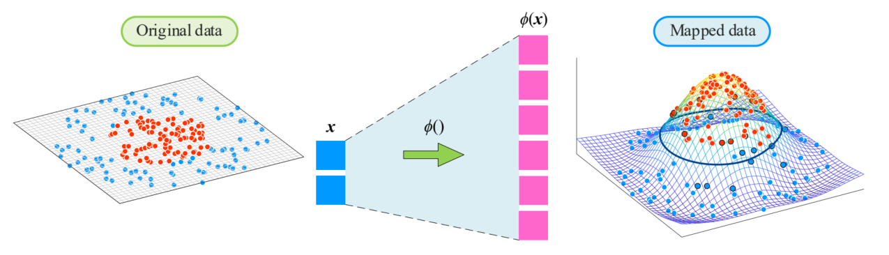机器学习 - 鸢尾花书系列
这一个过程，相当于在原来的d=2的平面空间中使用了非线性决策边界。 这是因为，当我们在Φ空间中找到了那个线性模型（由α^向量定义）后，我们用它来对新数据点x进行预测。其决策规则为： y=f(x)=j=1∑nα^jκ(xj,x) 尽管f(x)在高维Φ空间中是线性的，但由于核函数κ本身是低维空间中x的非线性函数（例如高斯核），所以应用了核技巧的替换后，f(x)作为x的函数变成了非线性的。 这个高维空间中的“线性超平面”被“投影”回我们原始的二维空间时，就变成了一条非线性的决策边界（例如环形）。正是这条非线性边界成功地解决了原始的非线性分类问题。
因此，核方法（如核SVM、核岭回归）可以被看作是一种“取巧”的方法。它们在“内核”上仍然是线性模型（因为它们是在Φ空间中寻找线性解）。但它们通过κ函数（核技巧）对数据进行了非线性变换。 正则化的必要性
我们为什么要不厌其烦地在优化目标中加入正则化项λ∥θ∥22（或者在核化形式中是λα⊤Kα）？ α^=argminα∥Kα−y∥22+λα⊤Kα 如果λ=0会怎样？如果我们去掉正则化项（即λ=0），优化问题就退化为argminα∥Kα−y∥22。这是一个标准的最小二乘问题，其解为α^=K−1y（假设核矩阵K可逆）。 我们知道，核方法的核心是将d维数据映射到p维特征空间。这个p维空间通常维度极高。我们经常会选择p>n（特征维度p超过样本数量n）的映射。 以我们最常用的高斯/RBF核为例，它对应的特征空间p=∞（无限维）。因此，对于高斯核，p>n永远成立。 - p>n的后果：在一个特征维度p远大于样本数n的空间中，数据点几乎总是“线性可分”的（或者对于回归问题，总是可以被一个超平面完美拟合的）。模型有太多的“自由度”和“能力”。
- λ=0的后果：如果没有正则化（λ=0），模型将“滥用”这种高维能力，不惜一切代价去完美拟合所有n个训练数据点，导致训练误差Ein≈0。
这会导致严重的过拟合 (Overfitting)。模型只是“背住”了训练数据，它学到的决策边界会变得极其复杂和扭曲。
以下图为例，β是高斯核函数κ(x,x′)=exp(−β∥x−x′∥2)的一个超参数。β越大，核函数越“尖锐”，模型的内在复杂度（能力）就越高。这等效于正则化的λ越接近0。 - 在回归任务中（第一行，β=10）：可以看到绿色的线变得极其“颠簸”，它疯狂地扭动，试图穿过每一个训练数据点。
- 在分类任务中（第二行β=10和第三行β=100）：决策边界变得极其复杂和不规则，它不再寻找一个平滑的、泛化的边界，而是试图“圈出”每一个单独的训练点，形成了许多孤立的“小岛”。
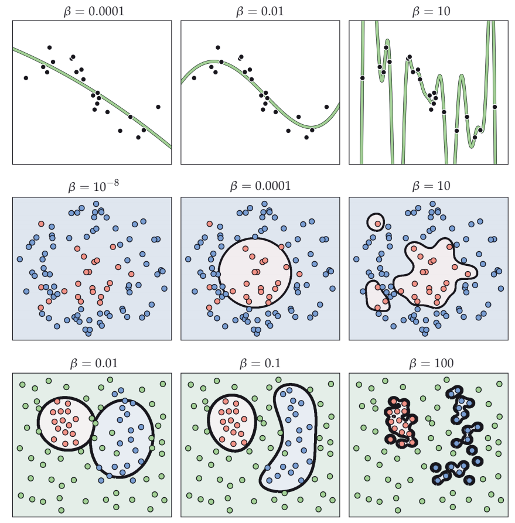Machine Learning Refined
这样的模型在训练集上Ein几乎为0，但如果此时来一个新的测试点，它的泛化表现（Eout）将会非常糟糕。 因此，当核方法（如高斯核）赋予了模型无限的复杂度（能力），正则化项λ（λ>0）是我们唯一的“刹车”或“缰绳”。它的作用是强迫模型在“拟合数据”（如图片中列所示）和“保持简单”（即α的范数不能太大，对应于θ的范数不能太大，也即决策边界更“平滑”，如图片中间一列所示）之间找到一个平衡。所以，对于核方法，正则化不是一个可选项，它是一个必需品。
💬 评论区